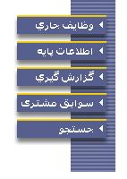

|
دسترسی به قسمتهای سیستم  پس از ورود به سیستم در سمت چپ صفحه متناسب با کاربر خود تعدادی از گزینه های این شکل که اجازه دسترسی به آنها را دارید را به شکل درخت میبینید، که هر کدام از این گزینه ها خود شامل چندین گزینه میباشند که شما نیز متناسب با کاربر خود تعدادی از گزینه های این شکل را میبینید. و از طریق این گزینه ها میتوانید دسترسی به قسمتهای مجاز سیستم داشته باشید. |